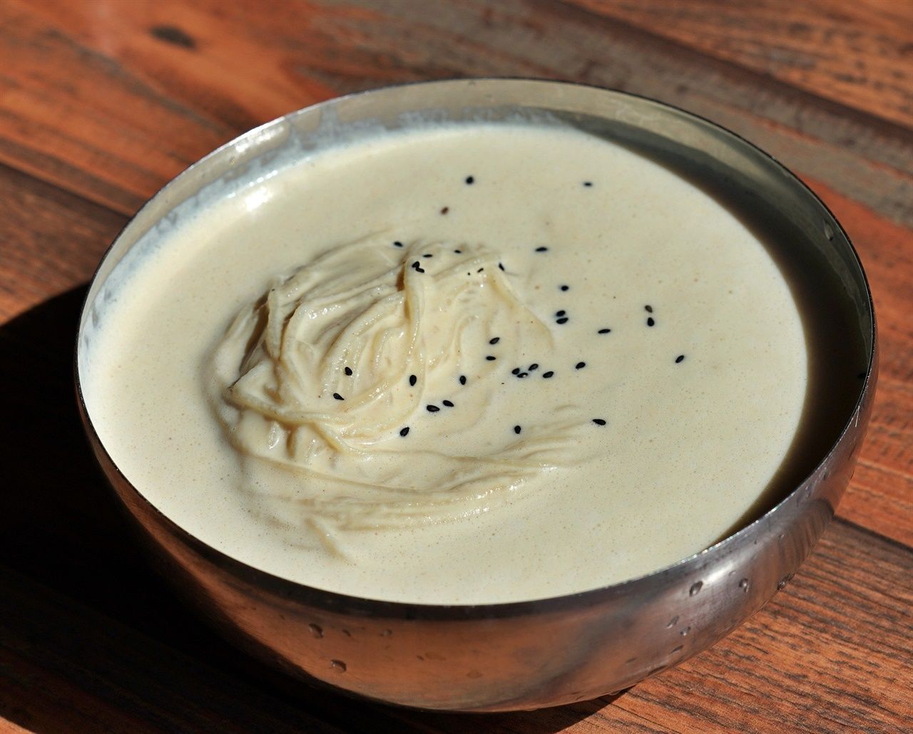
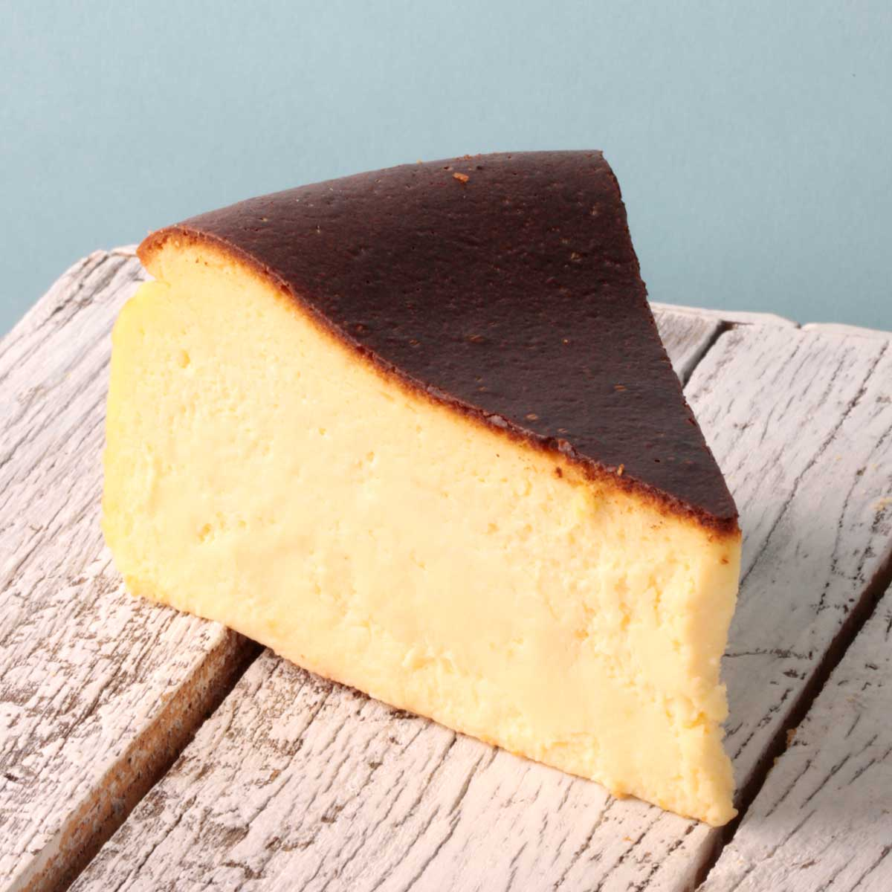
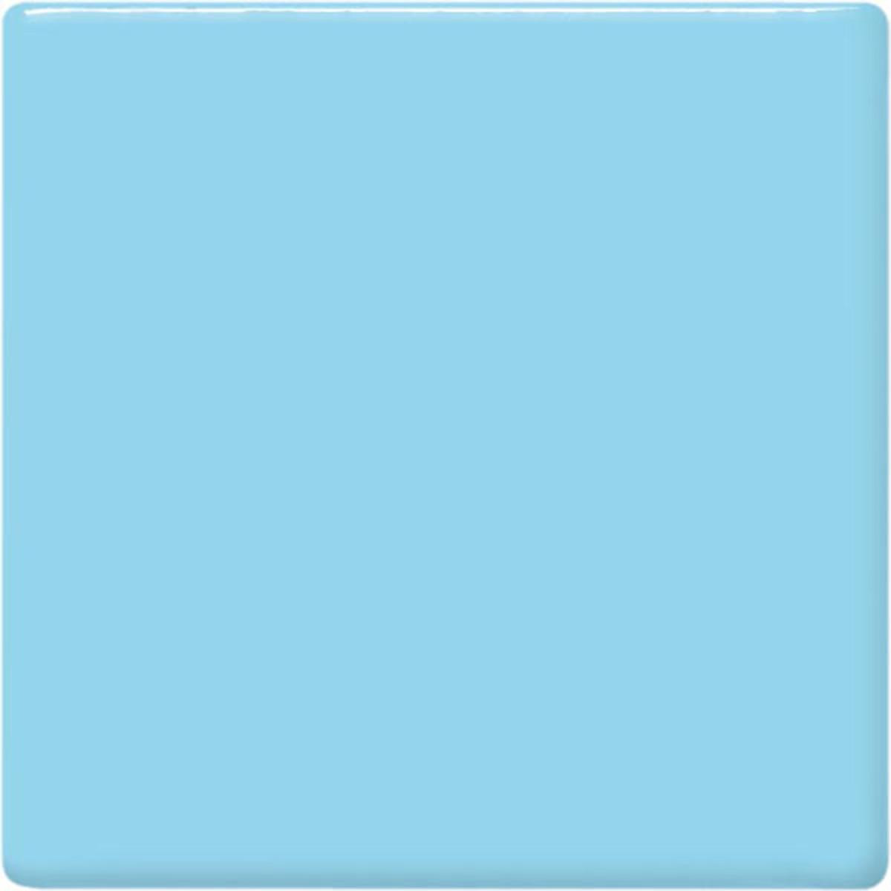

노래: 요루시카 - 그저 네게 맑아라
공부하거나 삶이 힘들 때 많이 들으면서 위로 받았던 곡입니다.
의지 하나만큼은 쉽게 꺾을 수 없습니다.
안녕하세요! 우테코 프론트엔드 8기 이현입니다.
몰입할 때와 몰입하지 않을 때 사람이 너무나도 다르다는 특징을 가지고
있습니다.
MBTI에서 S,T가 너무 심하다는 말을 많이 듣습니다.
| 이름 | 정연준 |
|---|---|
| MBTI | ESTP |
| 취미 | 게임(롤, 배그, 마인크래프트) |
| 좋아하는 음식 | 돈까스, 제육볶음, 콩국수, 김밥, 라면, 치킨, 햄버거, 피자 등 어패류 빼고 다 |

좋아하는 음식
좋아하는 디저트
좋아하는 색깔공부하거나 삶이 힘들 때 많이 들으면서 위로 받았던 곡입니다.
단순히 거인을 죽이는 애니메이션이라고 생각하시면 대단히 큰 오해입니다.
오늘 새롭게 배운 HTML, CSS, JavaScript를 기록합니다.
document.querySelector()로 요소를 선택하고 submit 이벤트를 연결해 폼 데이터를 동적으로 렌더링하는 방법을 배웠다.